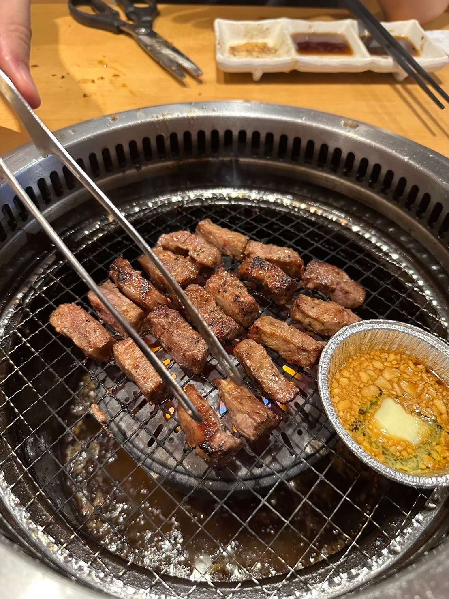
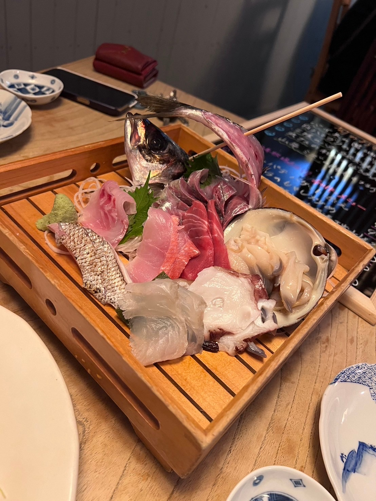
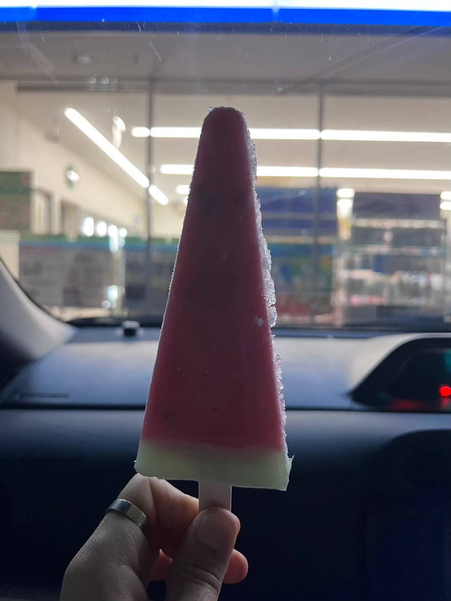
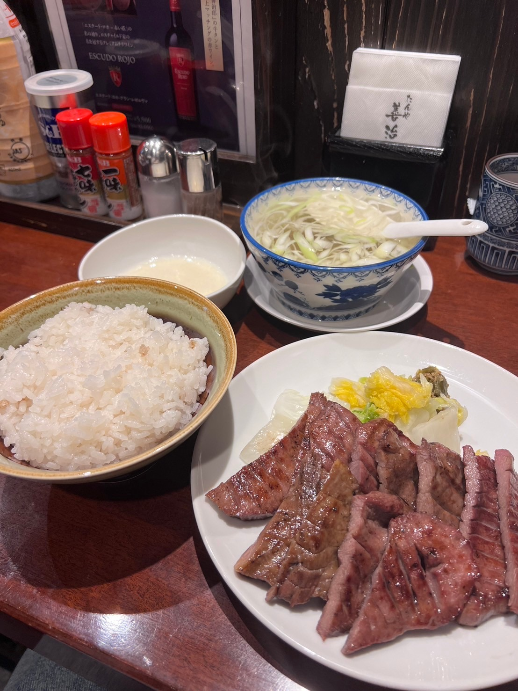
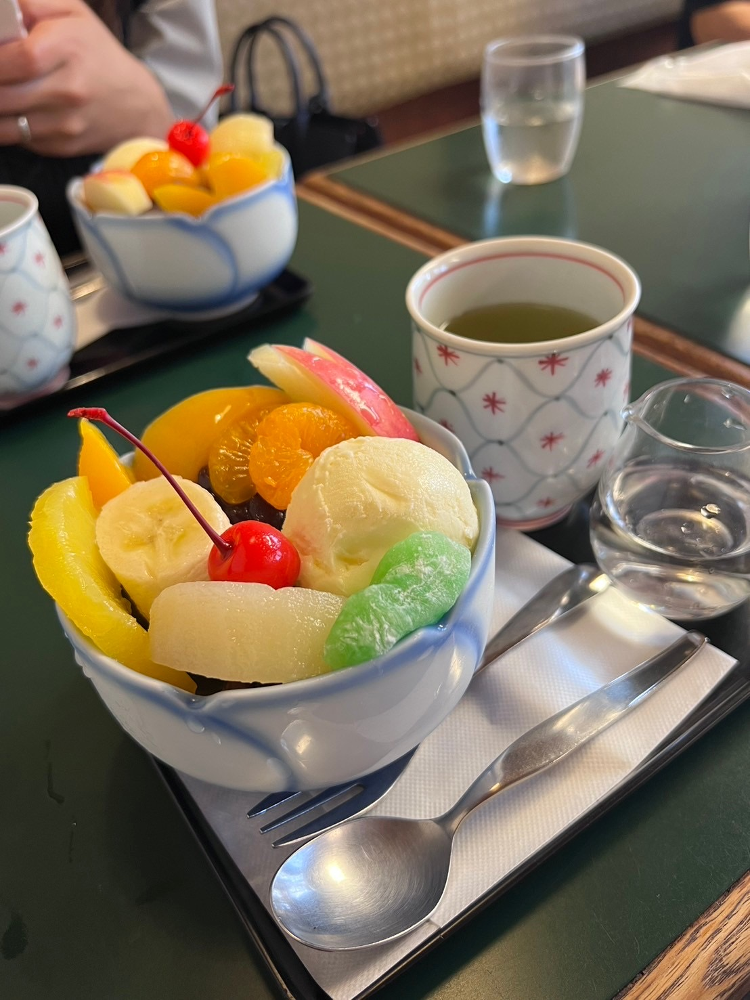
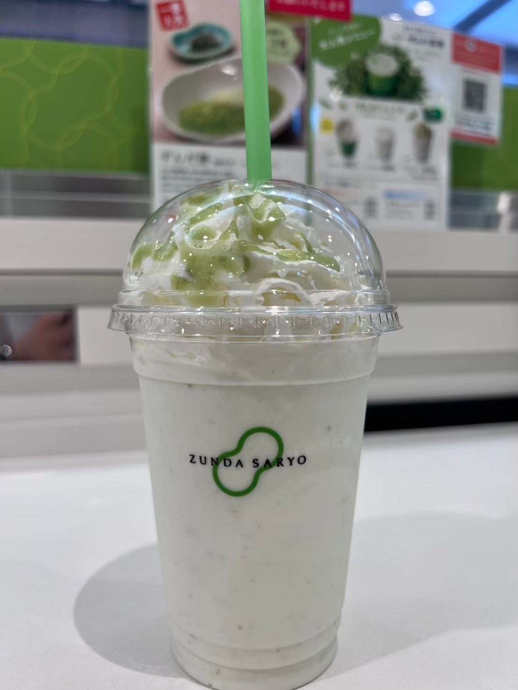
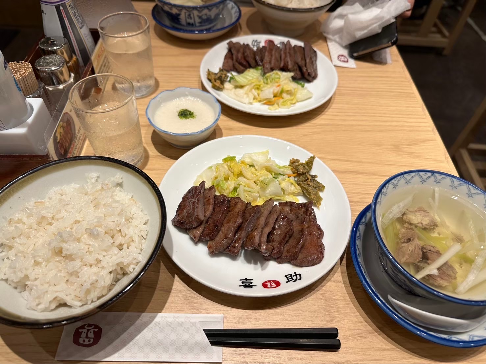
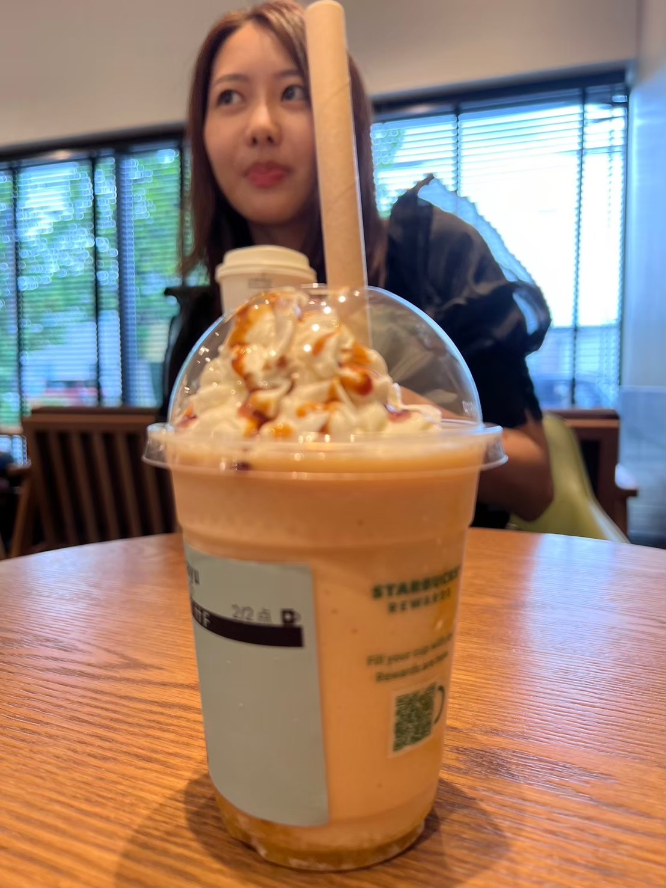
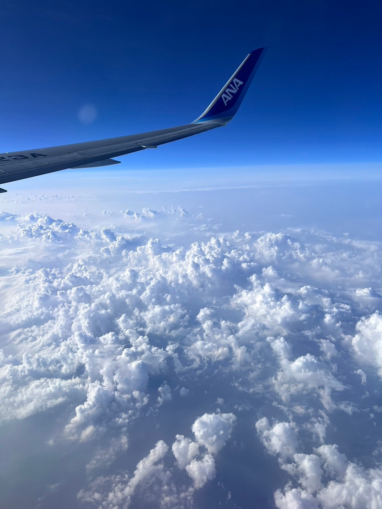

-

連れて行こうとしてた居酒屋さんがやってなくて、急遽焼肉食べ放題へ。ここだけ韓国かな？みたいな焼き方になってた。いつも肉にうるさくて、焼いてくれてありがとう。夜にはメルカリでトラブった人の愚痴を言って宥めてもらってたのに、大事な話の途中で寝ちゃってごめんね(日本社会とは〜という話のあたりから夢見てた)
-

ギョンちゃんはお留守番だった日。帰ってきてから海鮮の居酒屋でたくさん食べたね。東京に引っ越したら(同棲したら？)食費絶対月に10万超えるよねって話しとか、月々の予算の計算したね。懐かしい...そして、刺身もっとたくさん食べたかったね！！
-

アイス食べて帰って、映画のit見始めたところでもう眠くなって「寝る？」の一言に甘えて化粧落とさずに爆睡しちゃった。結局it見終わったんだっけ？笑
-

早起きして新幹線に乗って仙台へ！私が浪人した思い出のある街(笑)に連れて来れて嬉しかったし、天気も良くて、結構並んだけど、私が一番好きなお店の牛タンをギョンちゃんがすごく気に入ってくれたようで何よりでした。
-

そして商店街を散歩してこれまた私の好きな甘味処へ。隣のおばさんたちが私たちが白蜜か黒蜜か迷ってるの見てなんだかうるさかった笑。白蜜の方が甘かったんだっけ？お互い味見すればよかったけどしたっけ？お会計でギョンちゃんが奢ってくれたけど、一万円札たくさん出しててお店の人びっくりしてたね笑
-

駅に戻って本屋さんでプログラミングとか株の蘊蓄聞いた笑 ゲーセンでゾンビのゲームやってめっちゃ汗かいたけど、この時もギョンちゃんが先に死んじゃったんだっけ笑 ゾンビゲームまたやりたいなあ。駅でギョンちゃんが飲んでたずんだシェイクの豪華版。私はお腹いっぱいでこのサイズは飲めなかった笑
-

夜ご飯の時間に差し掛かってて、夜ご飯はノリで牛タンもう一軒！喜助、昔はお気に入りのお店だったけど今は善治郎しか勝たんなと思った。帰りの新幹線は爆睡した。
-

午前中itを見て(やっと結末思い出した、最後まで見たわ)、夕方はスタバまで徒歩で散歩〜ギョンちゃんが意外と甘いバナナブリュレフラペチーノ飲むから、定期的にこの人甘党だったーって思い出すやつだった。変な写りの私。夜ご飯は写真ないけど中華料理屋さんでお腹いっぱい食べたね。
-

最終日は玄関でバイバイした、、なかなか出られなくてなかなか言えなくて、やっとずっと寂しかったって伝えたらチューしてくれて車のとこまで送ってくれてありがとう。写真がないのでギョンちゃんの撮った写真を拝借するけど、これは帰りの空で合ってるのかな？仕事しながらもすごい寂しかった記憶。